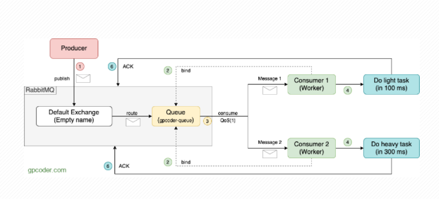
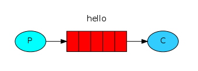
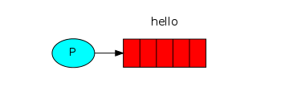
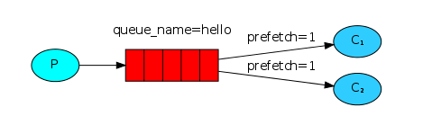

Work Queues
- Concepts
- Example
Concepts
-
Ý tưởng chính của
Work Queues(hayTask Queues) là tránh việc thực hiện ngay lập tức một work/task tốn nhiều tài nguyên và phải chờ nó hoàn thành. Thay vào đó chúng ta sẽ lên lịch (schedule) và các work/task này sẽ được thực hiện dựa trên schedule mà mình lập ra. -
Work Queuessẽ gói gọn (encapsulate) một task dưới dạngMessagevà gửi nó đến Queue. Sau đó có mộtworkerchạy background một process để lấy các task từ Queue ra thực thi chúng. Có thể tạo nhiều worker để thực hiện các task và các task này đều được chia sẻ giữa các worker với nhau.
Example

-
Producercó nhiệm vụ tạo các task và đưa vào RabbitMQ Broker, đi từ Exchange tới Queue -
Consumer- đóng vai trò như Worker có nhiệm vụ lấy các task từ Queue về xử lý. -
Consume Qos(1): Mặc định, RabbitQM sử dụng Round-robin để gửi Message đến Consumer kế tiếp một cách tuần tự. Mỗi Consumer có thời gian xử lý mỗi task khác nhau. Để tránh một Consumer nhận quá nhiều task mà không có thời gian xử lý, một Consumer quá rãnh không có thời gian thực hiện task nào hết. Ta sử dụng optionbasicQos()để buộc RabbitMQ chỉ gửi 1 Message cho 1 Consumer, khi nào Consumer xử lý xong task thì mới gửi tiếp 1 Message cho nó xử lý. Nhờ vậy thời gian hoàn thành sớm hơn. -
Các Consumer tiếp hành xử lý cái task mà nó được giao. Ở đây ví dụ Producer để tạo ra
10 Tasksvà 2 Consumer để thay phiên nhau xử lý các task này.Consumer 1sẽ xử lý1 task trong 100 milliseconds,Consumer 2sẽ xử lý1 task trong 300 milliseconds. Nếu theo cơ chế Round-robin dispatching của RabbitMQ thông thường thì mỗi Consumer sẽ xử ý 5 Tasks, thời gian xử lý mỗi Task của Consumer 2 lâu hơn nên Consumer 1 sẽ rỗi rảnh trong khi Consumer 2 vẫn còn việc phải xử lý. Tuy nhiên, mình đã sử dụngbasicQos()nên sẽ không có chuyện một Consumer rỗi rảnh và một Consumer có nhiều Task cần làm. -
Consumer sẽ gửi một ACK message đến RabbitMQ để báo rằng một Message đã được Consumer nhận, xử lý và Rabbit có thể xoá nó. Để tránh trường hợp nếu một Consumer xử lý Task trong một thời gian dài, chỉ một phần của Task được hoàn thành và nó die. Message đã bị xoá bởi RabbitQM và Task sẽ bị mất. Để giải quyết vấn đề này, chúng ta sẽ không auto gửi Message, mà chúng ta sẽ gửi một ACK message đến RabbitMQ khi nó hoàn thành xử lý Message.
Implement with Python
Ví dụ này dựa trên tutorial của RabbitMQ, Sử dụng thư viện pika 0.10.1 Python client
Hello World!
Ví dụ về một hệ thống gửi, nhận message và hiển thị nó lên màn hình. Chúng ta cần viết 2 chương trình, một chương trình gửi và một dùng để nhận và in thông tin ra màn hình.
Toàn bộ quá trình được biểu diễn qua sơ đồ sau:

Producer gửi các message tới "hello" queue và Comsumer sẽ nhận thông tin từ queue này.
Sending

Ta sẽ viết chương trình gửi message trong file send.py để gửi một message tới queue. Đầu tiên, chúng ta khởi tạo một kết nối tới máy chủ RabbitMQ.
#!/usr/bin/env python
import pika
connection = pika.BlockingConnection(pika.ConnectionParameters('localhost'))
channel = connection.channel()
Như vậy là chúng ta đã kết nối tới broker ở localhost, nếu broker nằm ở trên máy khác hãy thay thế bằng địa chỉ IP của nó.
Tiếp theo, chúng ta phải chắc chắn một điều là phải có một queue đã tồn tại, nếu chúng ta gửi message vào queue chưa có sẵn, các message này sẽ được RabbitMQ* cho vào trash. Tạo mới một queue cho các message, đặt tên của cho queue là "hello"
Trong RabbitMQ, một message có thể không được xếp vào queue. Nó phải được thông qua một exchange và exchange mặc định là empty. Đây là một exchange đặc biệt, nó cho phép chúng ta xác định chính xác queue nào mà muốn gửi message đến. Tên của queue được chỉ rõ trong tham số routing_key:
channel.basic_publish(exchange='', routing_key='hello', body='Hello World!')
print(" [x] Sent 'Hello World!'")
Cuối cùng là chúng ta ngắt kết nối tới server.
Lưu ý: Nếu quá trình gửi không thành công, chúng ta phải kiểm tra lại dung lượng trống của ổ đĩa lưu trữ, cấu hình mặc định của RabbitMQ là 1GB. Xem lại log và tăng dung lượng nếu cần. Kiểm tra tại file cấu hình ở trường disk_free_limit.
Receiving

Chương trình thứ 2 là receive.py sẽ nhận message từ queue và in nó ra màn hình.
Đầu tiên chúng ta cần phải kết nối tới máy chủ RabbitMQ như đã hướng dẫn ở phần trên.
Tiếp theo, chúng ta cũng phải xác định queue. Để chọn queue, chúng ta sử dụng dòng code sau:
Để nhận message, chúng ta tạo một hàm tên callback để giao tiếp với queue. Nội dung của hàm là nhận message và hiển thị nó ra màn hình.
Tiếp theo, chúng ta xác nhận lại với server rằng đã nhận được message từ hello.
Để cho code trên chạy, chúng ta phải chắc chắn rằng queue mà chúng ta muốn nhận message phải tồn tại, và chúng ta đã chọn nó ở phía trên queue_declare.
Cuối cùng, chúng ta thêm đoạn code để chờ, lắng nghe message từ queue.
Demo
Ta chạy file send.py trên một máy đã cài sẵn python pika và trỏ IP về máy chủ RabbitMQ thay thế cho trường localhost ở trong file, file này sẽ dừng sau mỗi lần chạy thành công:
Trên một máy nhận, chúng ta sửa IP của máy chủ RabbitMQ trong file và chạy:
Chương trình sẽ listen các message cho đến khi nào các ta bấm CTRL+C để thoát.
Work Queues
Ta đã có các chương trình để gửi và nhận các message từ một queue đã được định danh. Giờ ta sẽ tạo một Work Queue, được sử dụng để điều phối các tác vụ cần nhiều thời gian xử lý giữa nhiều worker với nhau.
Đầu tiên ta cần sửa lại file send.py một chút để cho phép bất kỳ nội dung nào có thể được gửi qua file. Nó sẽ đặt lịch vào các queue và đặt tên nó là new_task.py:
import sys
message = ' '.join(sys.argv[1:]) or "Hello World!"
channel.basic_publish(exchange='',
routing_key='task_queue',
body=message,
properties=pika.BasicProperties(
delivery_mode = 2, # make message persistent
))
print(" [x] Sent %r" % message)
Còn đối với file receive.py cũng có một vài thay đổi, là đếm số dấu . trong message. Nó sẽ nhận các message từ queue và thực thi tác vụ. Hãy đặt tên cho nó là worker.py
import time
def callback(ch, method, properties, body):
print(" [x] Received %r" % body)
time.sleep(body.count(b'.'))
print(" [x] Done")
Round-robin dispatching
Một lợi thế của việc sử dụng Work Queue là khả năng làm việc song song. Nếu chúng ta xây dựng một phần dự trữ của các work, ta có thể thêm nhiều các worker và khả năng mở rộng nó là tương đối dễ dàng.
Đầu tiên, chúng ta sẽ chạy script worker.py trên 2 máy khác nhau cùng một thời điểm.
Tiếp theo, chúng ta publish một số message như sau:
shell3$ python new_task.py First message.
shell3$ python new_task.py Second message..
shell3$ python new_task.py Third message...
shell3$ python new_task.py Fourth message....
shell3$ python new_task.py Fifth message.....
Kết quả hiển thị ở 2 cửa sổ console bên trên như sau:
shell1$ python worker.py
[*] Waiting for messages. To exit press CTRL+C
[x] Received 'First message.'
[x] Received 'Third message...'
[x] Received 'Fifth message.....'
shell2$ python worker.py
[*] Waiting for messages. To exit press CTRL+C
[x] Received 'Second message..'
[x] Received 'Fourth message....'
Mặc định, RabbitMQ sẽ gửi mỗi message tới một consumer theo tính tuần tự. Kiểu này được gọi là Round-robin, hãy thử lại tình huống này với 3 hoặc nhiều hơn 3 consumer.
Message acknowledgment
Một tác vụ được thực thi sẽ phải mất đến vài giây. Sau khi gửi xong, RabbitMQ sẽ xoá bỏ tác vụ đó ngay khỏi queue. Trong trường hợp một worker vì một lý do nào đó mà không thể hoạt động, chúng ta sẽ chuyển các tác vụ mà nó đảm nhận sang một worker khác. Để tránh việc thất lạc các message, RabbitMQ cung cấp cơ chế ack. Ack là một bản tin được gửi từ consumer tới server để thông báo rằng nó đã nhận và xử lý message và RabbitMQ có thể xoá nó trên queue.
Nếu consumer bị lỗi và không thể nhận được message, điều này đồng nghĩa với việc bản tin ack chưa được gửi đến server, lúc này RabbitMQ sẽ đưa message đó vào lại queue. Tại thời điểm này, nếu một consumer khác online RabbitMQ sẽ gửi lại message cho nó. Điều này giúp bạn yên tâm rằng, sẽ không có bản tin nào bị mất trong quá trình một worker nào đó bị lỗi.
Bản tin ack mặc định được bật. trong ví dụ lần trước, chúng ta đã tắt nó đi ở tuỳ chọn no_ack=True. Ở đoạn code dưới đây, chúng ta sẽ bỏ tuỳ chọn đó đi và ack sẽ được gửi từ worker.
def callback(ch, method, properties, body):
print " [x] Received %r" % (body,)
time.sleep( body.count('.') )
print " [x] Done"
ch.basic_ack(delivery_tag = method.delivery_tag)
channel.basic_consume(callback, queue='hello')
Khi sử dụng đoạn code trên, khi bạn có bấm CTRL+C để thoát khỏi chương trình thì sẽ không nhận được message từ server do vậy bản tin ack sẽ không được gửi đi cho đến khi nào bạn bật chương trình trở lại. Điều này giúp cho chúng ta không bị thất lạc bất cứ bản tin nào.
Message duralibity
Ở phần trên, chúng ta đã biết cách giải quyết khi consumer gặp sự cố. Nhưng khi RabbitMQ bị dừng đột ngột, tất cả các message sẽ bị mất hết. Để tránh sự việc này, RabbitMQ cung cấp cơ chế lâu bền hãy sử dụng đoạn code sau:
Tuy nhiên, đoạn code trên sẽ không được áp dụng với những queue đã có sẵn. Để thực hiện việc này, chúng ta phải tạo ra một queue mới có tên là task_queue.
Việc này phải được thay đổi trên cả producer và consumer. Và tại thời điểm này, chúng ta chắc chắn rằng sẽ không có message nào bị thất lạc khi RabbitMQ bị khởi động lại. Bây giờ, để thêm tính ổn định cho nó, chúng ta thêm thuộc tính delivery_mode với giá trị bằng 2.
channel.basic_publish(exchange='',
routing_key="task_queue",
body=message,
properties=pika.BasicProperties(
delivery_mode = 2, # make message persistent
))
Fair dispatch
Tuy nhiên việc điều phối các message đôi khi không như chúng ta nghĩ. Ví dụ chúng ta có 2 worker, một worker phải làm việc bận rộn còn work kia thì hầu như không. RabbitMQ không hề biết điều đó và vẫn điều phối các message đều.
Điều đó xảy ra vì RabbitMQ chỉ điều phối message khi chúng ở trong một queue. Nó chỉ việc gửi message đến consumer đã chỉ định mà không quan tâm đến bất cứ việc gì.

Để khắc phục điều đó, chúng ta sử dụng phương thức basic.qos với tùy chọn prefetch_count=1 để nói với RabbitMQ chỉ gửi một message tới 1 worker một lúc và sau khi nhận được ack từ worker vừa gửi là đã xử lý xong. Và đương nhiên, nó sẽ gửi tới worker kế tiếp.
Sử dụng cách này, chúng ta có thể thiết lập được các công việc được sắp xếp theo hàng đợi. Một số tùy chọn bên trên giúp RabbitMQ có thể hoạt động khi nó vừa bị khởi động lại.